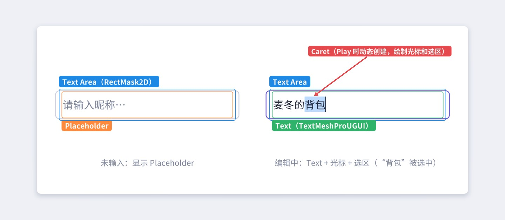
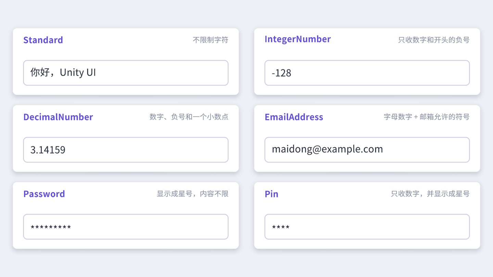
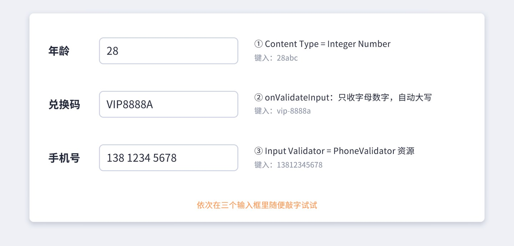
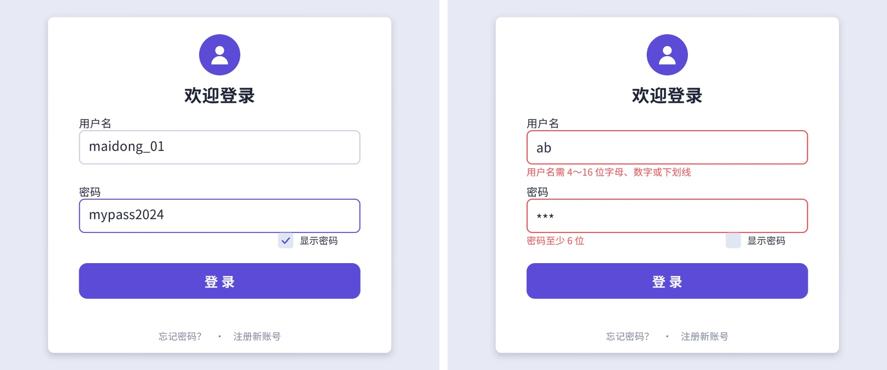
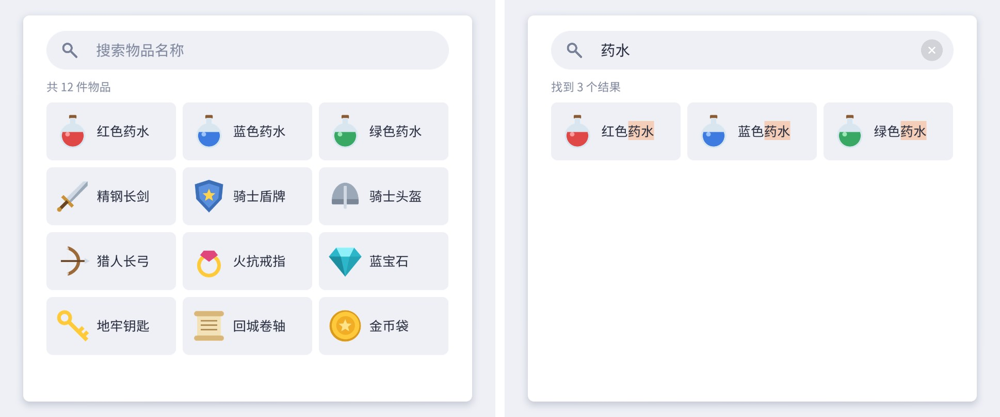
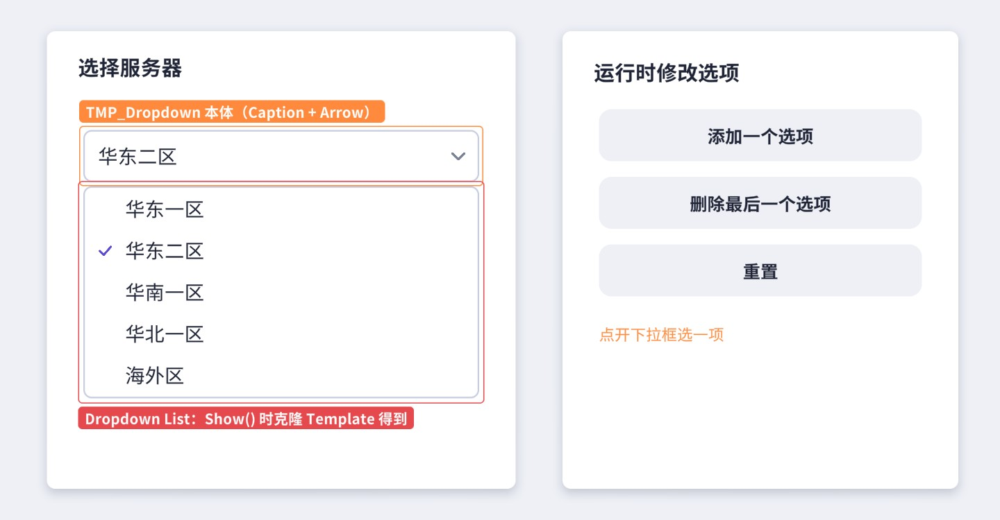
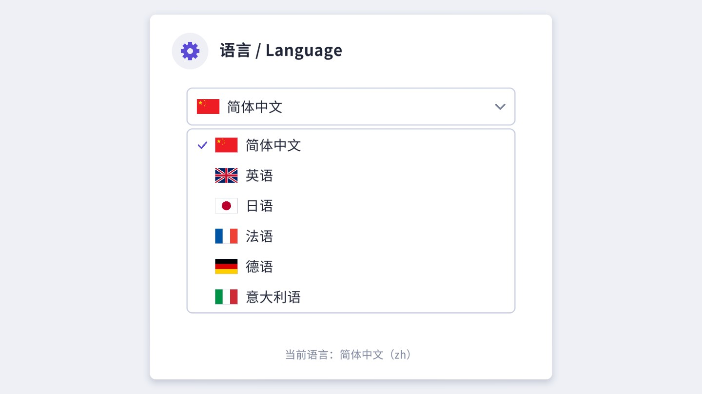
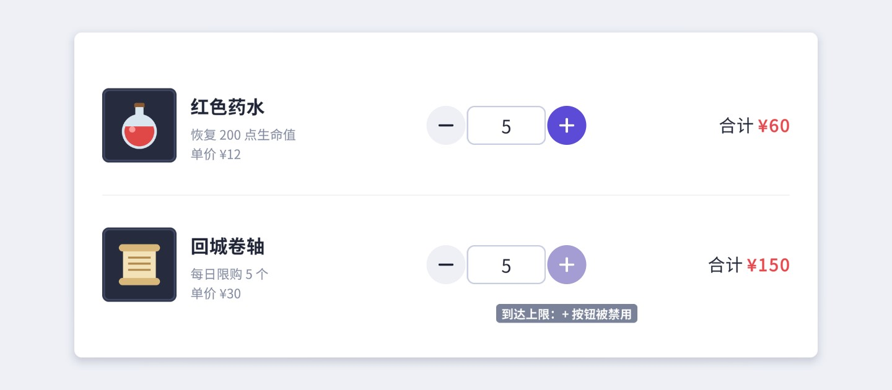

输入框和下拉框是 UI 里“最有脾气”的两个控件：输入框要和键盘、输入法、软键盘、光标、选区打交道，下拉框要在运行时临时克隆出一整个列表再销毁。本章以 TextMeshPro 版本的 TMP_InputField 和 TMP_Dropdown 为主，把结构、事件时序和那些只有读了源码才知道的规则讲清楚，再用五个案例把它们用起来。
Unity 有两个输入框：旧版的 InputField（配合旧版 Text）和 TextMeshPro 的 TMP_InputField。新项目一律用后者——它支持 SDF 字体、富文本、多行滚动，中文显示也清晰得多。本章只讲 TMP 版本，旧版的接口与之大同小异。
InputField (TMP)，可以看到 Text Area，以及它下面的 Placeholder 和 Text。Text Area 下面多出了一个 Caret 物体。
RectMask2D：文字超出输入框宽度时，超出部分被裁掉，输入框通过移动 Text 实现“横向滚动”。它的 padding 被设成 (−8, −5, −8, −5)，即裁剪区比 Text Area 略大一圈，光标停在最边上时不会被切掉一半。
Placeholder提示文字（“请输入昵称…”）。文本为空时显示、有内容时隐藏。它带一个 LayoutElement 且 ignoreLayout = true，不参与布局计算。
Text真正显示内容的 TextMeshProUGUI。不要直接改它的 text——输入框每次刷新都会用自己的 text 属性覆盖它。读写内容一律通过 TMP_InputField.text。
Caret（运行时）挂着 TMP_SelectionCaret（一个特殊的 MaskableGraphic），同时负责画光标竖线和选区高亮。它只在 Play 模式下由输入框在 OnEnable 时创建，HideFlags 为 DontSave，不会被存进场景。
Caret 的创建代码如下。理解了这一点，就不会奇怪“为什么我在编辑器里找不到光标物体”，也知道光标颜色、宽度这些属性为什么挂在 TMP_InputField 上而不是某个子物体上：
// 摘自 com.unity.textmeshpro 3.0.7 Scripts/Runtime/TMP_InputField.cs（OnEnable）
if (Application.isPlaying)
{
if (m_CachedInputRenderer == null && m_TextComponent != null)
{
GameObject go = new GameObject("Caret", typeof(TMP_SelectionCaret));
go.hideFlags = HideFlags.DontSave;
go.transform.SetParent(m_TextComponent.transform.parent);
go.transform.SetAsFirstSibling();
go.layer = gameObject.layer;
...
}
}
Caret 被放在 Text Area 的第一个子节点，也就是最先绘制，所以选区的蓝色高亮在文字下面，不会盖住字。另一个小细节：输入框把内容赋给 Text 时会在末尾追加一个零宽空格 ，用来定位“最后一个字符之后”的光标位置。如果你去读 textComponent.text，会发现长度比 inputField.text 多 1，这也是“不要直接读写 Text 子物体”的原因之一。
维护老项目时两种输入框常常并存，下面几处差异最容易造成迁移问题：
| 方面 | 旧版 InputField | TMP_InputField |
|---|---|---|
| 文字组件 | Text，直接作为输入框的子物体 | TextMeshProUGUI，放在带 RectMask2D 的 Text Area 里 |
| 多行滚动 | 不支持滚动条 | 可关联 Vertical Scrollbar，支持滚轮 |
| 自定义校验器 | 只有 onValidateInput 委托 | 另有 TMP_InputValidator 资源（需自行插入字符） |
| 提交事件 | onSubmit 与 onEndEdit | onSubmit 存在但不在 Inspector 中显示 |
| 富文本 | 可显示，编辑时标签会被破坏 | 可选择是否允许编辑标签（Allow Rich Text Editing） |
迁移时最容易漏掉的是代码里的类型：GetComponent<InputField>() 拿不到 TMP_InputField，两者没有继承关系。批量替换可以写一个编辑器工具，第 21 章会给出类似的“批量替换组件”示例。
TMP_InputField 的 Inspector 字段很多，按用途分组如下（名字以 Inspector 显示为准）：
text 属性。
Font Asset / Point Size同时设置 Text 和 Placeholder 的字体、字号的快捷入口。
Character Limit最大字符数，0 为不限。只限制键盘输入，代码赋值不受限（见下文）。
Content Type内容类型的“套餐”，选定后会同时设置下面几个隐藏字段，见 8.3 节。
Line TypeSingle Line / Multi Line Submit / Multi Line Newline，决定回车是提交还是换行。
Placeholder提示文字的 Graphic。
Vertical Scrollbar多行输入时可关联一根 Scrollbar，内容超出时可滚动。
Caret Blink Rate / Caret Width / Custom Caret Color光标闪烁频率（次/秒，0 为不闪）、宽度（1～5 像素）与颜色。不勾 Custom 时光标颜色跟随文字颜色。
Selection Color选区高亮颜色，默认是半透明浅蓝。
OnFocus - Select All获得焦点时全选（默认开）。“输入金额”这类场景很方便；聊天框里一般要关掉。
Reset On DeActivation失去焦点时释放选区并触发 onEndEdit（默认开）。
Restore On ESC Key按 Esc 时恢复成获得焦点前的内容（默认开）。
Hide Soft Keyboard / Hide Mobile Input移动端：不弹软键盘 / 隐藏软键盘上方的系统输入条，见 8.5 节。
Read Only只读：可以选中、复制，不能修改。
Rich Text / Allow Rich Text Editing是否解析富文本标签；是否允许用户直接编辑标签源码。
| 事件 | 参数 | 触发时机 |
|---|---|---|
| onSelect | string 当前文本 | 输入框被 EventSystem 选中（点击、Tab 导航、代码 Select） |
| onValueChanged | string 新文本 | 内容每改变一次（每敲一个字、每次删除、代码给 text 赋值） |
| onSubmit | string | 编辑中按回车（Line Type 不是 Multi Line Newline 时）；或者输入框处于“选中但未在编辑”状态时收到导航系统的 Submit 事件（例如手柄确认键） |
| onEndEdit | string | 结束编辑：按回车、按 Esc、或失去焦点 |
| onDeselect | string | EventSystem 的选中对象变成了别的物体 |
| onTextSelection / onEndTextSelection | string, int, int | 用户拖选文字时 / 选择结束时，后两个参数是字符串里的起止位置 |
按回车时，源码在 OnUpdateSelected 里的处理是这样的：
// 摘自 com.unity.textmeshpro 3.0.7 Scripts/Runtime/TMP_InputField.cs（OnUpdateSelected）
shouldContinue = KeyPressed(m_ProcessingEvent);
if (shouldContinue == EditState.Finish)
{
if (!m_WasCanceled)
SendOnSubmit();
DeactivateInputField();
break;
}
KeyPressed 在遇到回车（非 Multi Line Newline）时返回 Finish，遇到 Esc 时设置 m_WasCanceled 并返回 Finish。随后 DeactivateInputField 退出编辑状态，在 Reset On DeActivation 开启时调用 ReleaseSelection，里面发出 onEndEdit。把这些串起来，就得到图 8-2 的时序：
由此可以得出选择事件的经验法则：
wasCanceled 属性判断一下是不是取消。Input.GetKeyDown(KeyCode.Return)——这种写法在失焦和回车同帧发生时不可靠，直接用 onSubmit 即可。text 的 setter（内部的 SetText）里原本用于“按 Content Type 校验每个字符、按 Character Limit 截断”的那段代码是被注释掉的。也就是说，inputField.text = "abc" 赋给一个 Integer Number 输入框，它就真的显示 abc；赋一个 100 字的字符串给 Character Limit = 10 的输入框，也不会截断。从服务器、存档读来的数据，要自己先校验再赋值。Content Type 是一个“套餐”：选定之后，输入框会在 EnforceContentType 里一次性设置四个底层字段——Line Type（行模式）、Input Type（普通/自动更正/密码）、Keyboard Type（移动端弹哪种键盘）、Character Validation（字符校验规则）。选 Custom 时这四个字段才会在 Inspector 里单独显示出来让你自己配。

| Content Type | Line Type | Input Type | Keyboard Type | Character Validation |
|---|---|---|---|---|
| Standard | 不强制 | Standard | Default | None |
| Autocorrected | 不强制 | AutoCorrect | Default | None |
| Integer Number | SingleLine | Standard | NumberPad | Integer |
| Decimal Number | SingleLine | Standard | NumbersAndPunctuation | Decimal |
| Alphanumeric | SingleLine | Standard | ASCIICapable | Alphanumeric |
| Name | SingleLine | Standard | Default | Name |
| Email Address | SingleLine | Standard | EmailAddress | EmailAddress |
| Password | SingleLine | Password | Default | None |
| Pin | SingleLine | Password | NumberPad | Digit |
几个值得注意的点：只有 Standard 和 Autocorrected 允许多行，其他类型都会把 Line Type 强制改回 SingleLine——你把一个 Integer Number 输入框设成多行，保存后会发现它又变回了单行。Integer 校验只允许数字和开头的负号；Decimal 再允许一个小数点，而且小数点用的是当前区域设置的分隔符（CurrentCulture.NumberFormat.NumberDecimalSeparator），在小数点为逗号的地区它放行的是逗号。Name 校验会自动把单词首字母变成大写、限制撇号和连字符的用法、拒绝数字，规则是为西文人名设计的，中文昵称别用它，用 Standard 加长度限制即可。
密码类输入框显示的星号可以通过 asteriskChar 换成别的字符（比如圆点“●”，前提是字体里有这个字形）；注意星号只是显示层的替换，text 里存的始终是明文，日志、埋点里千万不要把它打印出来，存储和传输前也要按安全规范处理。
多行输入框还需要配合 Line Limit（最多几行）以及一根 Vertical Scrollbar，否则内容一多就看不到光标了。
“只允许输入某些字符”有三种实现方式，按灵活程度从低到高排列。它们之间有明确的优先级，源码里 Append(char) 的这一段说明了一切：
// 摘自 com.unity.textmeshpro 3.0.7 Scripts/Runtime/TMP_InputField.cs（Append）
if (onValidateInput != null)
{
input = onValidateInput(validateText, insertionPosition, input);
}
else if (characterValidation == CharacterValidation.CustomValidator)
{
input = Validate(validateText, insertionPosition, input);
if (input == 0) return;
SendOnValueChanged();
UpdateLabel();
return;
}
else if (characterValidation != CharacterValidation.None)
{
input = Validate(validateText, insertionPosition, input);
}
// If the input is invalid, skip it
if (input == 0)
return;
// Append the character and update the label
Insert(input);
char OnValidateInput(string text, int charIndex, char addedChar)。每键入一个字符调用一次，返回要插入的字符（可以替换成别的），返回 '\0' 表示拒绝。它一旦被设置，就完全取代第 1 层——即使 Content Type 是 Integer，只要设置了 onValidateInput，内置的数字校验就不再执行。它只能用代码赋值。
第 2 层的例子：兑换码只允许字母和数字，小写自动变大写，最长 12 位。
第 3 层的例子要格外小心。看上面源码的 CustomValidator 分支：校验后没有调用 Insert，而是直接 SendOnValueChanged 并返回。再看 Validate 里对自定义校验器的调用：
// 摘自 com.unity.textmeshpro 3.0.7 Scripts/Runtime/TMP_InputField.cs（Validate）
else if (characterValidation == CharacterValidation.CustomValidator)
{
if (m_InputValidator != null)
{
char c = m_InputValidator.Validate(ref text, ref pos, ch);
m_Text = text;
stringSelectPositionInternal = stringPositionInternal = pos;
return c;
}
}
也就是说，TMP 的约定是：自定义校验器自己负责把字符插进 text，并把 pos 移到插入点之后；返回值只表示接受（非 0）还是拒绝（0）。如果你照着“返回字符就行”的直觉写，结果会是：校验器返回了字符，但字符从来没被插进去，输入框里永远是空的。这个约定与旧版 UGUI InputField 不同，从旧项目迁移过来时极易踩坑。弄清楚之后，它反而是三种方式里最强大的——可以随意改写整段文本，比如自动插入分隔空格：
校验器的核心是“把带空格的显示文本还原成纯数字 → 在正确位置插入新数字 → 重新格式化 → 把光标放到新数字之后”。光标位置不能简单地加 1，因为格式化可能在新数字前面插入了空格。
Custom，Character Validation 设为 Custom Validator，把资源拖进 Input Validator 字段。Phone Pad，移动端会弹出拨号键盘。判断顺序：内置规则能满足就用 Content Type（数字、邮箱、密码），零代码、移动端键盘自动配好；需要“替换”字符（自动大写、全角转半角、把空格换成下划线）或规则依赖其他运行时状态（比如“昵称里不能出现敏感词首字”）时用 onValidateInput，它简单直接，但只能逐字判断、不能改动已有文本；需要改写整段文本、或者规则要在很多输入框之间复用（手机号、银行卡号、金额千分位）时写 TMP_InputValidator 资源。还有一类需求三层都做不好：“输入完整后再判断合法性”，例如邮箱格式、用户名是否已被占用——这属于提交时校验，放在 onEndEdit 或提交按钮里，案例 8.1 就是这样做的。
Append 里执行，只覆盖键盘输入和粘贴；删除字符不经过校验（所以手机号删到“138 ”时末尾会留一个空格，可以在 onValueChanged 里重新格式化来修正），代码赋值也不经过校验（8.2 节）。另外，前端校验只是为了体验，任何提交到服务器的数据，服务器都必须再校验一遍。在手机上，输入框获得焦点时 TMP 会调用 TouchScreenKeyboard.Open 弹出系统软键盘，并把 Keyboard Type、是否密码、是否多行、Character Limit 一并传给系统。下面这些问题几乎每个手游项目都会遇到：
TouchScreenKeyboard.area（键盘占用的屏幕区域，部分平台返回零矩形，以实际版本和设备为准），把面板整体上移；更省事的做法是把需要输入的面板设计在屏幕上半部分。Hide Mobile Input 可以隐藏它，让用户直接在游戏的输入框里看到内容——但这依赖平台支持“原地编辑”，TMP 内部通过 TouchScreenKeyboard.isInPlaceEditingAllowed 判断，不支持时仍以系统输入条为准。Hide Soft Keyboard，再用代码往 text 里追加字符。<u> 下划线显示（需开启 Rich Text）。组字期间 Character Limit 和校验都不生效，确认后才逐字走 Append。字数统计如果在 onValueChanged 里做，组字过程中也会被调用——显示时可以减去 Input.compositionString.Length。输入框有两个容易混淆的状态：被选中（EventSystem.currentSelectedGameObject 是它）和正在编辑（isFocused 为 true，光标闪烁、键盘输入进来）。正常点击时两者同时发生，但用代码控制焦点时必须分清：
EventSystem.current.SetSelectedGameObject(null)。
isFocused是否正在编辑。常用于“输入框获得焦点时屏蔽游戏快捷键”：玩家在聊天框里打字母 W，角色不该往前走。
最后一条值得展开：游戏里用 Input.GetKeyDown 读快捷键的代码，并不知道键盘输入正在被输入框使用。通用的判断方法是检查当前选中物体上有没有正在编辑的输入框：
// 任何读键盘快捷键的地方先判断一下
static bool IsTyping()
{
var go = EventSystem.current != null ? EventSystem.current.currentSelectedGameObject : null;
if (go == null) return false;
var tmp = go.GetComponent<TMPro.TMP_InputField>();
if (tmp != null) return tmp.isFocused;
var legacy = go.GetComponent<UnityEngine.UI.InputField>();
return legacy != null && legacy.isFocused;
}
另一个常见需求是“打开界面时自动聚焦到第一个输入框”。在界面的 OnEnable 里直接调 ActivateInputField 有时不生效——界面刚激活时，EventSystem 可能还选中着上一个界面的按钮，而那个按钮这一帧又被禁用了。稳妥的写法是延迟一帧（协程 yield return null 之后）再 Select + ActivateInputField。移动端则要慎重：自动聚焦会立刻弹出软键盘遮住半个屏幕，很多时候让用户自己点更好。
目标：用户名 + 密码 + “显示密码”复选框 + 登录按钮。离开某个输入框时校验它，错误时边框变红并在下方显示提示，开始重新输入时提示消失；Tab 键切换输入框；用户名框回车跳到密码框，密码框回车直接登录；请求过程中禁用表单防止重复提交。

事件的分工体现了 8.2 节的经验法则：校验放在 onEndEdit（填完再说），清除错误放在 onValueChanged（一开始改就别再显示错误了），流程推进放在 onSubmit（回车跳下一个 / 登录）。还有一个常被忽略的细节：UGUI 默认不处理 Tab 键，桌面端用户却习惯按 Tab 在字段间移动，所以在 Update 里自己处理。
错误提示不要只说“输入有误”，要说清楚规则（“需 4～16 位字母、数字或下划线”）。边框颜色用的是输入框下面的 Outline 图片——不要用改 Image.color 的方式去改输入框底图，底图是 targetGraphic，状态过渡（悬停、按下）会和你抢颜色。
“显示密码”只需切换 Content Type。但 contentType 的 setter 只是重新设置了规则，已经显示出来的星号并不会刷新，要再调一次 ForceLabelUpdate()。
ValidateUser() & ValidatePassword() 用的是单个 &：两个方法都会执行，两处错误一起显示。写成 && 的话，用户名错时会短路，密码的错误要等改好用户名后才冒出来，用户得来回改好几轮。Focus 里先 Select() 再 ActivateInputField()：前者让 EventSystem 选中它，后者让它真正进入编辑状态（实际在下一帧的 LateUpdate 里生效）。
目标：聊天窗口底部一个输入框和“发送”按钮。回车或点按钮发送；发送后清空输入框且光标仍留在输入框里，可以接着打字；空消息不发送；新消息出现后列表自动滚到底部。
“发送后保持焦点”是这个案例的关键。回顾 8.2 节的源码：onSubmit 是在 DeactivateInputField() 之前发出的。我们在 onSubmit 回调里调用 ActivateInputField()，它只是设置一个“下一帧激活”的标志；紧接着输入框执行 Deactivate 退出编辑；到下一帧的 LateUpdate，输入框检查到标志，又重新进入编辑状态。如果在回调里直接调用 Select()，因为输入框本来就是被选中的，什么都不会发生，焦点照样丢失。
点击“发送”按钮的情况略有不同：按下按钮时 EventSystem 选中了按钮，输入框先收到 onEndEdit 和 onDeselect；按钮的 onClick 里再调用 ActivateInputField 把焦点要回来——ActivateInputFieldInternal 会先把 EventSystem 的选中对象设回输入框。所以两条路径都能保持焦点。
气泡的尺寸用 TMP 的 GetPreferredValues 手算：先不限宽度量出单行宽，超过最大宽度就以最大宽度为约束再量一次高度。之所以这样“手算”，是为了让本章专注于输入；用 LayoutGroup + ContentSizeFitter 自动撑开气泡的写法在第 10 章，消息成千上万条时的虚拟化列表在第 18 章。ScrollToBottom 里先 Canvas.ForceUpdateCanvases()，因为刚加进去的气泡要等布局重建后 Content 才会变高，不强制重建的话，设置的 normalizedPosition 是按旧高度算的，会差一条消息。
如果希望长消息在输入框里也能折行显示，把 Line Type 改为 Multi Line Submit：显示多行、回车仍然是发送。再配合 Line Limit（例如 3 行）和输入框高度随内容增长（读 textComponent.preferredHeight 调整输入栏高度，并同步调整上方列表的底边），就是常见的聊天输入栏了。注意在这种模式下，Shift + 回车同样会被当作提交，源码在判断回车键时并不区分 Shift；需要“Shift + 回车换行”的话，onValidateInput 帮不上忙（回车在走到校验之前就已经被判定为“结束编辑”），可以继承 TMP_InputField 重写 public virtual 的 OnUpdateSelected，在交给基类处理之前拦截 Shift + 回车、自己插入换行。
OnFocus - Select All，否则每次重新获得焦点都会全选草稿。② 关掉 Rich Text 或对用户输入转义，防止玩家输入 <size=200> 之类的标签搞乱聊天框（案例 8.3 有转义的写法）。③ 用户正在往上翻看历史消息时，不应强行滚到底部：可以在添加消息前判断 verticalNormalizedPosition 是否已经接近 0，只有本来就在底部时才自动滚。目标：背包物品列表上方一个搜索框，每输入一个字就过滤一次，命中的文字高亮；输入框右侧有“×”清空按钮，只在有内容时显示；显示结果数量。

<mark=#RRGGBBAA> 标签在文字背后画一块半透明色块。注意颜色要带透明度，否则会把文字盖住。< 可能被当成标签开头。这里用 <noparse> 把它包起来，TMP 会原样显示其中的内容。凡是“把用户输入拼进富文本”的地方（聊天、昵称、搜索高亮）都要做这一步。ActivateInputField() 让光标回到输入框，用户可以直接输入新的关键词。下拉框（Dropdown）收起时只显示当前选项，点开后弹出选项列表。用 创建一个，展开层级：
灰色的 Template 是未激活的。它是一个完整的、带 ScrollRect 的小列表：Viewport（Mask）→ Content → 唯一的一个 Item（Toggle，含背景、勾选标记、文字），外加一根竖向 Scrollbar。这个 Item 就是“选项行”的模板。下拉框真正显示的列表并不是它，而是点开时克隆出来的副本：

Show() 的流程是理解下拉框一切行为的钥匙，我们分几段读：
// 摘自 com.unity.textmeshpro 3.0.7 Scripts/Runtime/TMP_Dropdown.cs（Show，节选）
if (!validTemplate)
{
SetupTemplate(); // 第一次打开时检查模板，并给它加 Canvas / Raycaster / CanvasGroup
if (!validTemplate)
return;
}
m_Template.gameObject.SetActive(true);
m_Template.GetComponent<Canvas>().sortingLayerID = rootCanvas.sortingLayerID;
// Instantiate the drop-down template
m_Dropdown = CreateDropdownList(m_Template.gameObject); // 默认实现就是 Instantiate(template)
m_Dropdown.name = "Dropdown List";
m_Dropdown.SetActive(true);
RectTransform dropdownRectTransform = m_Dropdown.transform as RectTransform;
dropdownRectTransform.SetParent(m_Template.transform.parent, false);
DropdownItem itemTemplate = m_Dropdown.GetComponentInChildren<DropdownItem>();
...
for (int i = 0; i < options.Count; ++i)
{
OptionData data = options[i];
DropdownItem item = AddItem(data, value == i, itemTemplate, m_Items); // 每个选项克隆一行
...
item.toggle.isOn = value == i;
item.toggle.onValueChanged.AddListener(x => OnSelectItem(item.toggle));
...
}
从这段流程能推出很多实用结论：
overrideSorting = true、sortingOrder = 30000，所以展开的列表会盖住同一画布上的其他所有 UI。它还会复制父画布上的 Raycaster，保证列表能接收点击。如果你自己的 UI 也用了很高的 sortingOrder（比如新手引导层），可能会出现下拉列表被盖住的情况。RectTransformUtility.FlipLayoutOnAxis 翻转，屏幕底部的下拉框因此会向上展开。selectedIndex = i - 1，减去的那个 1 是被禁用的模板行。所以千万不要往 Content 下额外塞别的子物体，否则选中的索引会错位。CreateDropdownList、CreateItem、DestroyItem 等都声明为 protected virtual，可以继承它改用对象池；选项实在太多时，应该换成“弹出一个带搜索的列表面板”的交互（比如国家/地区选择）。理解了 Template 机制，也就知道了 TMP_Dropdown 的能力边界：它天生是单选的——OnSelectItem 选中即收起。常见的“多选下拉”（筛选多个标签）、“带分组标题的下拉”、“选项右侧带删除按钮”等需求，与其在 TMP_Dropdown 上硬改，不如用一个 Button 加一个自己控制显隐的弹出面板来实现：面板里放 ScrollRect 和一组 Toggle（多选就不加 ToggleGroup），再仿照 Show() 的做法创建一个全屏透明 Blocker 负责“点空白处关闭”，并给面板加一个 overrideSorting 的 Canvas 保证它在最上层。这套组合拳用到的全部知识，本章和第 7、9 章都已经讲过。
选项列表 options 就是一个普通的 List<OptionData>。常用 API：
AddOptions 有三个重载：List<string>、List<Sprite>、List<OptionData>，追加后自动刷新标题。ClearOptions 清空选项并把 value 归零（有 Placeholder 时归为 −1）。options 列表后，标题不会自动更新，要调用 RefreshShownValue()。SetValue 发现新旧值相同就直接返回。“重新选一次当前服务器以刷新列表”这种需求，要监听选项行的点击或者自己加一个“刷新”按钮。注意这和 Toggle“点已选中项也回调”的行为正好相反。SetValueWithoutNotify。MaskUtilities 源码，第 14 章细讲），所以列表能完整地伸出滚动区域之外。但“伸出去的列表还跟着内容滚”看起来很怪，常见做法是滚动列表开始拖动时调用 Hide()，或者把下拉框放在滚动区域之外。目标：设置界面的“语言”下拉框，每个选项前面有一面小国旗，收起时标题左边也显示当前语言的国旗；选择结果写入 PlayerPrefs，下次打开自动选中。

TMP_Dropdown 原生支持“文字 + 图片”的选项，只是默认创建的结构里没有放图片组件。准备工作：
Item Image，锚在左侧、勾选 Preserve Aspect，并把 Item Label 的左边距加大，给国旗让出位置。Item Image 字段。Caption Image，放在标题文字左边，同样拖给对应字段，并调整 Label 的左边距。有了 Caption Image 和 Item Image，填数据时只要构造 new OptionData(文字, 精灵) 即可，克隆时 AddItem 会自动把精灵赋给 Item Image，并在精灵为 null 时把它禁用；RefreshShownValue 同样会把当前选项的精灵赋给 Caption Image。启动时用 SetValueWithoutNotify 恢复上次的选择，避免一打开界面就触发“切换语言”。
配套工程不带任何外部图片素材，国旗是用代码画的（真实项目里直接用图集中的精灵）。画法本身与 UI 无关，但“运行时生成 Sprite”这个技巧很有用：
运行时用 new Texture2D + Sprite.Create 生成的精灵不会被存进场景（它们不是资源文件），所以生成逻辑放在 Awake 里，每次运行时重新生成；用一个静态字典缓存，避免重复生成。每张旗帜都是一张独立的小纹理，会打断合批（第 12、20 章），量大时应该把它们画进同一张图集纹理。
目标：商店里的购买数量选择——[−] [输入框] [+]。点按钮加减 1，按住不放连续加减且越来越快；也可以直接输入数字；数值限制在 [最小值, 最大值]，到达边界时对应按钮变灰。

先写一个通用的“按住连发”组件。它不依赖 Button 的 onClick，而是自己处理按下、抬起、移出：
为什么不用 onClick？Button 的 onClick 在抬起时触发，而连发逻辑在按下时就要先触发一次——两者都用的话，单击一次会加 2。按下立即触发的手感也更跟手。OnPointerExit 时也停止，这是交互上的选择：PointerUp 总会发给按下时的那个物体，所以不处理 Exit 也不会“停不下来”；但手指按住后滑出按钮，通常表示用户想反悔，此时立刻停止连发更符合预期。
IntegerNumber，并把 Character Limit 设成边界值的位数。但 Integer 校验允许负号，用户仍可能输入“−”或者什么都不输入，所以 onEndEdit 里解析失败就恢复原值。SetValue：Clamp、回写输入框、更新按钮可用状态、发事件。到达上限时禁用 + 按钮，PressRepeat 在 Update 里检查到 IsInteractable() 为 false 就会停止连发——两个组件无需互相引用。SetTextWithoutNotify，与第 7 章案例 7.6 的道理一样。| 现象 | 原因与解决 |
|---|---|
| 输入中文显示方块 | 字体资源里没有这些字。TMP 的动态字体会在运行时把字形加进图集，但前提是源字体文件包含该字；静态字体只能显示生成时包含的字符。Placeholder 和 Text 要分别检查字体（第 5 章）。 |
| 输入框点了没反应 | 根节点的 Image 被禁用或 Raycast Target 关了；上面有透明图挡住；Text Viewport / Text Component 引用丢失（自己改结构时最常见）。 |
| 文字比输入框高，被裁掉一半 | Text Area 的 RectMask2D 在裁剪。调小字号或加大输入框高度，并检查 Text Area 的上下 offset。 |
| 设置了 Character Limit，代码赋值还是超长 | 代码赋值不受限制（8.2 节），自己截断：s.Length > limit ? s.Substring(0, limit) : s。 |
| 回车后焦点丢了 | 单行和 Multi Line Submit 模式下回车就是“结束编辑”。需要保持焦点就在 onSubmit 里调用 ActivateInputField（案例 8.2）。 |
| Dropdown 展开后被别的 UI 盖住 | 别的 UI 所在 Canvas 的 sortingOrder 高于 30000，或者在更高的 Sorting Layer。展开列表的排序层取自根画布的 sortingLayerID。 |
| Dropdown 选中的索引错位 | Template 的 Content 下除了 Item 还有别的子物体，OnSelectItem 按兄弟序号减 1 计算索引。 |
| Dropdown 第一次展开明显卡顿 | 第一次展开要执行 SetupTemplate（添加组件）并克隆全部选项；选项多时尤其明显。减少选项、用对象池，或在界面打开后的空闲时机预热一次。 |
inputField.text。CreateItem 和 DestroyItem，用对象池复用选项行；用 Profiler 对比 200 个选项时展开下拉框的 GC 分配。